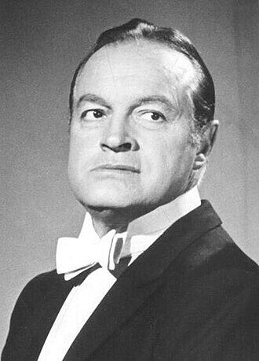

In March 1908 the Hope family crossed the Atlantic from England to Cleveland, Ohio. Among the seven sons was a four-year-old named Leslie Townes Hope.

Bob Hope was born in a London suburb in 1903 and came to Cleveland as a boy of four. He became a United States citizen not by his own oath but through his father's, and grew into the entertainer most closely bound to the American military — the first civilian Congress ever named an honorary veteran of the armed forces.
The document behind this story
Honorary Award citation for Bob Hope, 38th Academy Awards — Academy of Motion Picture Arts and Sciences, 1966-04-18.
People often say Bob Hope "won five Oscars." The Academy's own record tells a more interesting story: his awards were honorary, not competitive. This is the citation read out when he received his second Honorary Award — the exact words the Academy used.
To Bob Hope for unique and distinguished service to our industry and the Academy.
Leslie Townes Hope was born on 29 May 1903 in Eltham, a suburb of London, the fifth of seven sons of the stonemason William Henry Hope and the singer Avis Townes Hope. In March 1908 the family emigrated to the United States and settled in Cleveland, Ohio, in the Doan's Corners neighbourhood. His father's first job there was carving stone for the Church of the Covenant, and he later worked on Cleveland's Guardians of Traffic.
The boy went to the Fairmount schools and East High, sang in the Church of the Covenant choir, took dancing lessons, and boxed briefly under the name "Packy East" before losing in a novice championship and giving it up.
Hope went into vaudeville in 1922, worked up through partner acts and Broadway revues, and in 1928 struck out as a solo comedian — changing his first name to "Bob." Broadway brought him Roberta and the 1936 Ziegfeld Follies; from 1938, radio brought him The Bob Hope Show on NBC.
Hollywood made him a star. After a 1934 short and The Big Broadcast of 1938, he teamed with Bing Crosby and Dorothy Lamour for the "Road" pictures, and from 1950 he was a fixture of American television, with specials running almost every year into the 1990s.
In 1941 Hope entertained troops at an air base in California, joined the USO, and never really stopped. He took his radio show overseas in 1943, began his Christmas shows for the troops in 1948, and performed for American servicemen and women through the Korean War, Vietnam, and the Gulf War.
The country noticed. The armed forces named him an honorary "Four Star Hero" in 1992 and awarded him the Distinguished Service Medal in 1995, and in 1997 the House of Representatives made him the first civilian ever named an honorary veteran of the United States armed forces.
Hope never took a citizenship oath of his own. Under the law of the time, a child became a citizen automatically when a parent was naturalised — and so, as the record plainly states, "when his father was naturalized in December 1920, Hope became a United States citizen." He was seventeen. The boy who had crossed the Atlantic at four was made an American by an act in which he took no part.
It is a quiet but important point for a museum about immigration. Citizenship did not always arrive through a grand ceremony. Very often it arrived through a parent's paperwork — a form filed by someone else that changed a child's country without the child lifting a pen.
Hope's film honours are often inflated in the retelling, and a museum should be exact. The Academy of Motion Picture Arts and Sciences records three honours for him: an Honorary Award for 1952, the Jean Hersholt Humanitarian Award for 1959, and a second Honorary Award for 1965, presented in the spring of 1966. Two further honours — a special plaque and a life membership — are widely reported, but we could not confirm them in the Academy's own records. None of the confirmed honours is a competitive Academy Award. Hope was knighted by Britain in 1998, kept both of his countries close, and died at his home in California on 27 July 2003, at the age of one hundred.
Every fact on this page comes from one of these 5 items. Each links to the institution that holds it and gives that institution’s own rights wording.
The anchor: the comedian at the height of his television years.
Rights, in the institution’s words: Commons record labels this image: Public domain.
reference entry
Primary biographical source: born Eltham 29 May 1903; family emigrated to Cleveland in March 1908; “when his father was naturalized in December 1920, Hope became a United States citizen”; vaudeville from 1922; solo as “Bob” from 1928; radio, film and the USO; died 27 July 2003.
Rights, in the institution’s words: (not checked; cited only)
record
The Academy lists Bob Hope among recipients of the Honorary Award for 1952 and 1965, and of the Jean Hersholt Humanitarian Award for 1959. None is a competitive Academy Award.
Rights, in the institution’s words: (not checked; cited only)
award citation
The exact citation for Hope’s second Honorary Award: “To Bob Hope for unique and distinguished service to our industry and the Academy,” presented by Jack Lemmon on 18 April 1966.
Rights, in the institution’s words: (not checked; cited only)
reference entry
The Library of Congress holds the Bob Hope Collection and mounted the exhibition “Bob Hope and American Variety”; context for his vaudeville, radio, film and troop-entertainment career.
Rights, in the institution’s words: (not checked; cited only)